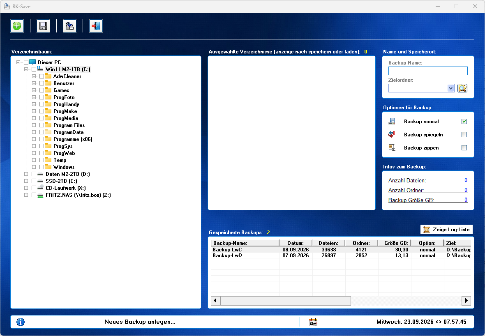
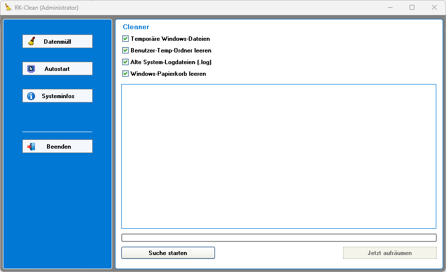
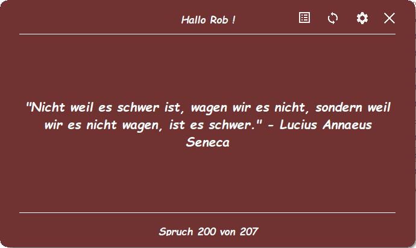
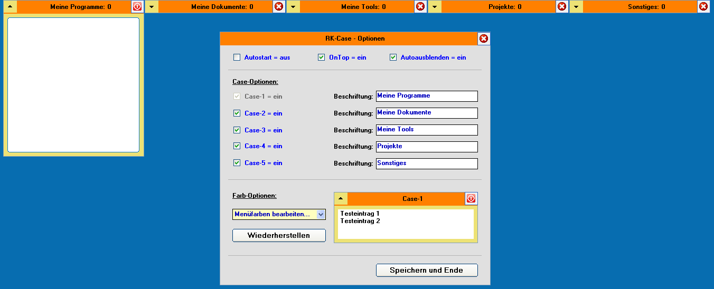
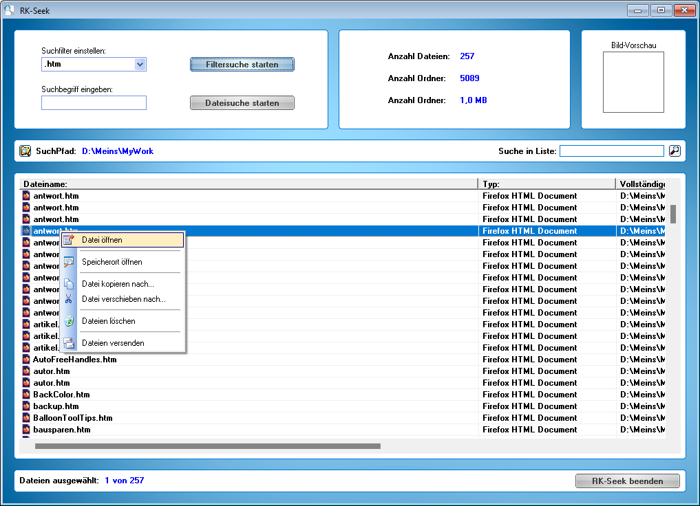
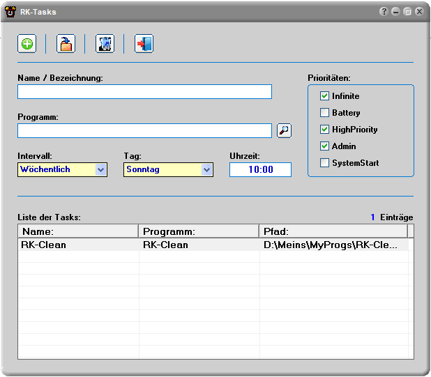
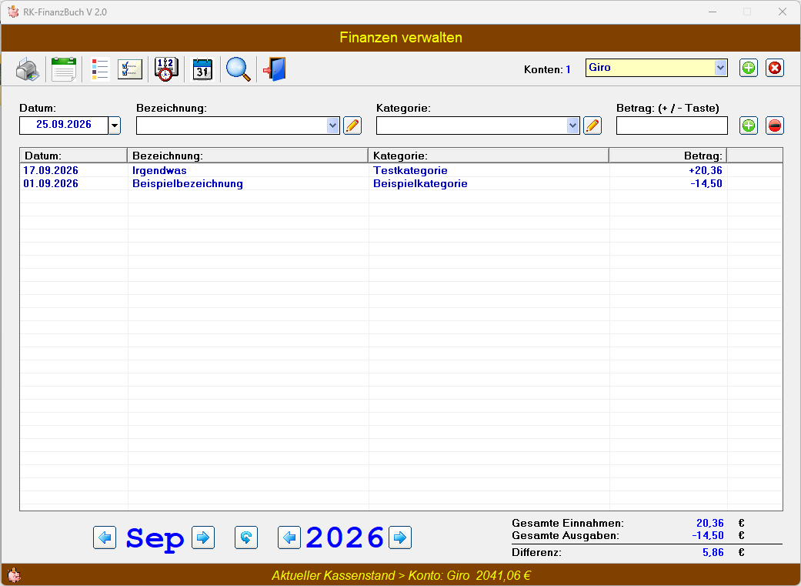
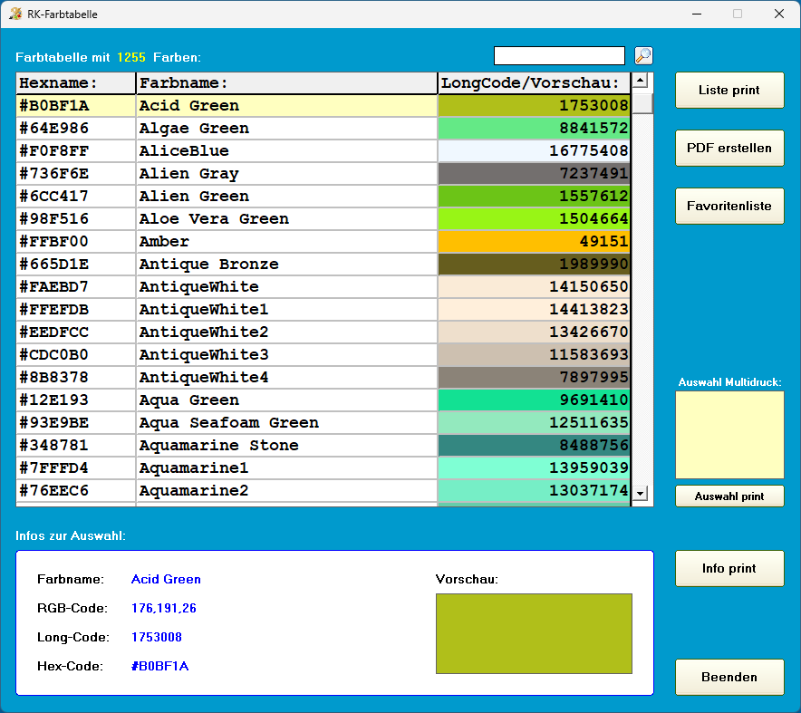
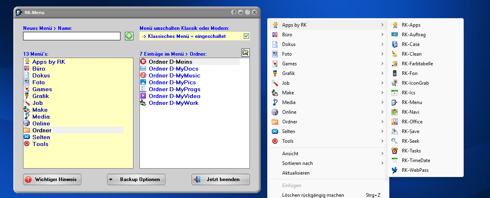
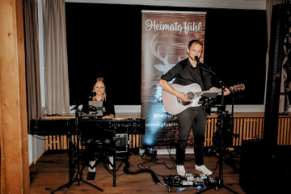

RK-Save
Ein Datensicherungsprogramm mit Optionen wie Normal, Sync oder Zip und einer Log-Liste.
Jetzt kostenlos downloaden
RK-Clean
Dieses Tool reinigt die speziellen Datenmüll-Ordner und optimiert den Autostart.
❗Für die Autostart-Bearbeitung werden Adminrechte benötigt.

RK-Moti
Ein Programm, das dir bei jeder Anmeldung einen Spruch anzeigt, um dich zu motivieren.
❗ Für den Autostart-Eintrag werden Adminrechte benötigt.

RK-Case
Ein Starterprogramm das sich ganz oben an den Bildschirmrand anheftet und sich automatisch ausblenden kann wenn gewünscht.
Die einzelnen Cases können ausgeklappt werden und dann kann man per Drag & Drop aus dem Windows-Explorer Dateien, Ordner,
Dokumente, Anwendungen usw. in die Fächer ziehen. Auch farblich kann es nach eigenen Wünschen gestaltet werden.

RK-Seek
Ein Datei Schnellsuchprogramm mit Filter- oder Dateisuche.
Die gefundenen Dateien können direkt, oder auch nur der Speicherort geöffnet werden.
Es lassen sich mehrere Dateien auswählen,
die sich dann kopieren, verschieben, löschen oder auch per Email versenden lassen. Wobei das versenden per Email auf das Programm
Thunderbird-Mail ausgelegt ist.
Sollte die Datei ein Bild sein, wird oben rechts eine Vorschau der Bilddatei angezeigt,
beim klick auf das Vorschaubild wird es in Originalgröße geöffnet.

RK-Tasks
Dieses Tool trägt Tasks in die Aufgabenplanung nach den gewünschten Optionen ein.
Z. b. können damit Programme eingetragen werden die zu bestimmten Zeiten starten sollen.
❗ Für die Tasks eintragen/löschen werden Adminrechte benötigt.

RK-Finanzbuch
Ein kleines Finanzbuch für den privaten gebrauch.
Verwaltet Ein- und Ausgaben und zeigt diese in übersichtlichen Tabellen an.
Automatische Buchungen können erfasst werden und Balkendiagramme zeigen die Auswertung.

RK-Farbtabelle
Eine Farbtabelle mit 1255 Farben inkl. Farbvorschau.
Es zeigt den Namen, RGB-, Long- und HEX-Code an. Wenn man auf einen Code klickt, wird dieser
in die Zwischenablage gelegt zur weiteren verwendung. Außerdem kann man sich noch eine Favoritenliste anlegen
und die Listen als PDF speichern oder ausdrucken.

RK-Menu
Ein Tool mit dem man das Windows-Kontextmenu (Rechtsklickmenu) selbst gestalten kann.
Voraussetzung dafür ist in Windows-11 das klassische Menü anzeigen zu lassen, die Option zum Umschalten ist im Programm vorhanden.
Auf der rechten Seite die Menüs oder auch (Kategorien) anlegen, dann kann man auf der linken Seite für diese Kategorie
direkt aus dem Explorer per Drag & Drop Dateien, Dokumente, Bilder, Anwendungen usw. oder auch komplette Ordnerverknüpfungen reinziehen.
Das Programm bleibt dabei immer im vordergrund. Es gibt auch eine Suchenschaltfläche wo sich ein Öffnen-Dialog meldet um von dort aus
das entsprechende auszusuchen.
Aus dem Programm heraus kann man Backups erstellen, die auch sauber wieder eingespielt werden können.
Im Ordner Icon, der nach dem entpacken verfügbar ist befinden sich etliche Icons, die man als Bilder für die erstellten Menü`s verwenden kann.
Einfach in der rechten Liste mit rechts klicken und den entsprechenden Befehl wählen.

Heimatg`fühl
Eine besondere Empfehlung für Euer Event!
Hochzeitsband Heimatg'fühl, mehr als nur ein Duo!